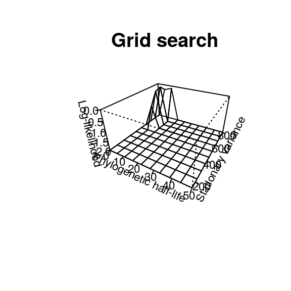
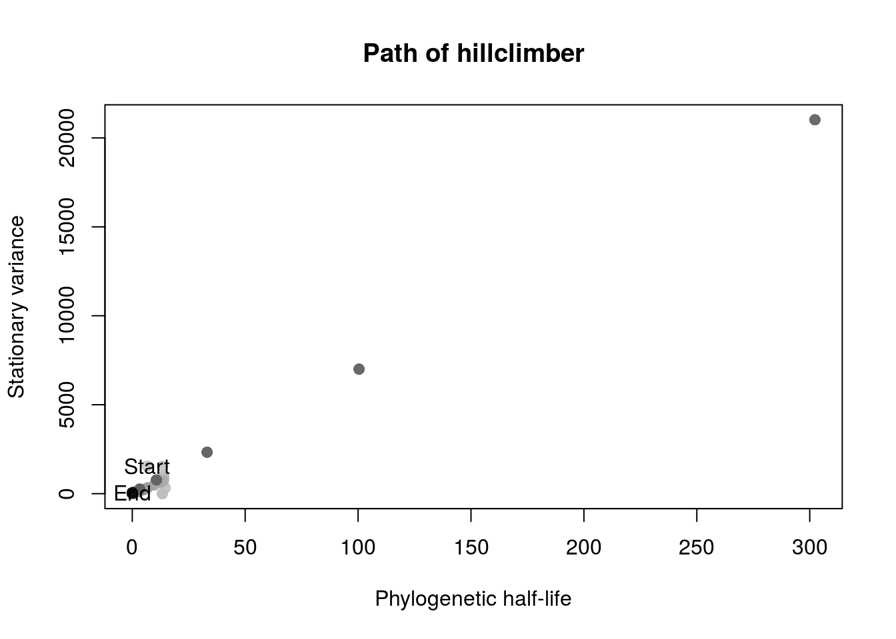
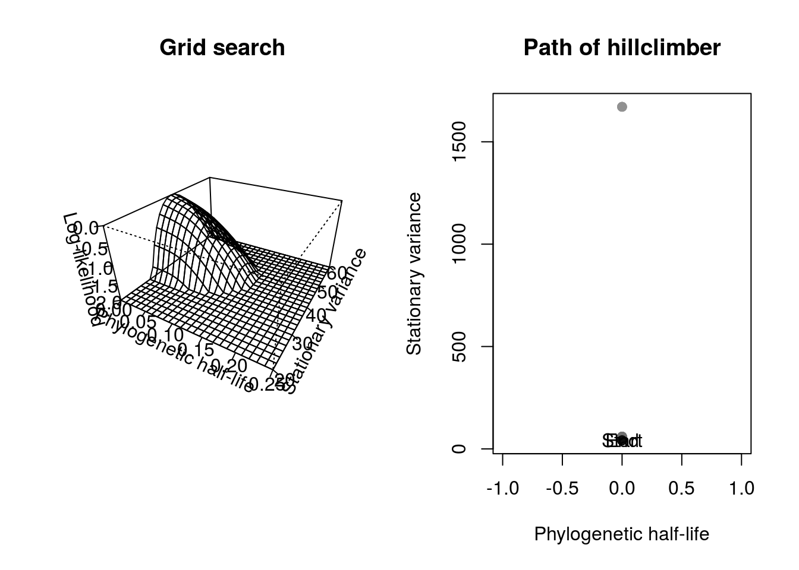

Slouch user guide
Bjørn Tore Kopperud
2017-05-05
Slouch is an implementation of a particular phylogenetic comparative method. It can fit univariate among-species Ornstein-Uhlenbeck models of phenotypic trait evolution, where the trait evolves toward a primary optimum. Optima can be fitted either as discrete regimes as niches on the phylogenetic tree, and/or with continuous covariates. See the following articles for more information about the theoretical background, how the method is derived, and how to interpret the parameters.
- Hansen (1997)1
- Butler & King (2004)2
- Hansen et al. (2008)3
- Labra et al. (2009)4
- Hansen & Bartoszek (2012)5
Prerequisites
In order to fit an Ornstein-Uhlenbeck model in slouch, you will need to have a phylogenetic tree of interest in the phylo format, from package ape. The phylogenetic tree must be rooted. Polytomies and non-branching edges are allowed. Both ultrametric and non-ultrametric trees can be used, but this will have implications for what parameters can reliably be estimated. For the purposes of illustrating syntax, let’s create an arbitrary tree.
library(ape)
set.seed(8)
n <- 80
phy <- rtree(n)
oldmar <- par("mar"); par(mar = c(0,0,0,0))
plot(ladderize(phy))
par(mar = oldmar)Slouch can fit univariate Ornstein-Uhlenbeck models. Let’s create a toy dataset. The species in the data frame need to be in a particular order to line up with the order of the tree, so I will intentionally scramble the dataframe first, to illustrate how to reorder it.
mydata <- data.frame(species = phy$tip.label,
y = rnorm(n, sd = 4) + 1:n*1.7,
x = rnorm(n, sd = 4) + 1:n,
z = rnorm(n, sd = 4) + 1:n*(-0.6))
plot(mydata$x, mydata$y, ylab = "y", xlab = "x")
## Scramble the rows
mydata <- mydata[sample(1:n, n),]
## Check whether they are lined up correctly
mydata$species == phy$tip.label## [1] FALSE FALSE FALSE FALSE FALSE FALSE FALSE FALSE FALSE FALSE FALSE
## [12] FALSE FALSE FALSE FALSE FALSE FALSE FALSE FALSE FALSE FALSE FALSE
## [23] FALSE FALSE FALSE FALSE FALSE FALSE FALSE FALSE FALSE FALSE FALSE
## [34] FALSE FALSE FALSE FALSE FALSE FALSE FALSE FALSE FALSE FALSE FALSE
## [45] FALSE FALSE FALSE FALSE FALSE FALSE FALSE FALSE FALSE FALSE FALSE
## [56] FALSE FALSE FALSE FALSE FALSE FALSE FALSE FALSE FALSE FALSE FALSE
## [67] FALSE FALSE FALSE FALSE FALSE FALSE FALSE FALSE FALSE FALSE FALSE
## [78] FALSE FALSE FALSEUnsurprisingly, not a single one of the species is in its correct place. As slouch is (for now) intentionally programmed in a dumb way, we will have to reorder the species. Here is one way to do it.
mydata <- mydata[match(phy$tip.label, mydata$species) ,]
## Check if they line up again
mydata$species == phy$tip.label## [1] TRUE TRUE TRUE TRUE TRUE TRUE TRUE TRUE TRUE TRUE TRUE TRUE TRUE TRUE
## [15] TRUE TRUE TRUE TRUE TRUE TRUE TRUE TRUE TRUE TRUE TRUE TRUE TRUE TRUE
## [29] TRUE TRUE TRUE TRUE TRUE TRUE TRUE TRUE TRUE TRUE TRUE TRUE TRUE TRUE
## [43] TRUE TRUE TRUE TRUE TRUE TRUE TRUE TRUE TRUE TRUE TRUE TRUE TRUE TRUE
## [57] TRUE TRUE TRUE TRUE TRUE TRUE TRUE TRUE TRUE TRUE TRUE TRUE TRUE TRUE
## [71] TRUE TRUE TRUE TRUE TRUE TRUE TRUE TRUE TRUE TRUESingle optimum model
Now we are ready to fit the first models, for which we will use the function slouch.fit. The following is an intercept only model, or a single optimum model. In slouch, there are two main techniques for estimating the most likely \(\alpha\) and \(\sigma_y^2\) parameters. In this particular implementation the \(\sigma_y^2\) is reparameterized as \(\frac{\sigma_y^2}{2\alpha}\), which is the variance of the predictor variable when it is stationary around the optimum. The first way is to use a grid-search of likely parameters from user input, which may take some trial and error.
library(slouch)
model0 <- slouch.fit(phy = phy,
hl_values = seq(0, 50, length.out = 10),
vy_values = seq(150, 800, length.out = 10),
species = mydata$species,
response = mydata$y)
plot(model0, cex.lab = 0.7, cex.axis = 0.7)
model0 <- slouch.fit(phy = phy,
hl_values = seq(0, 100, length.out = 25),
vy_values = seq(0.1, 10000, length.out = 25),
species = mydata$species,
response = mydata$y)
plot(model0, cex.lab = 0.7, cex.axis = 0.7)
These plots of the likelihood surfaces are both based on the same data, but with different grid location and resolution. The optima and model fit statistics that are reported in the output are conditional on a particular combination of these \(\alpha\) and \(\sigma_y^2/2\alpha\). When the grid-search is used, these parameters are the combination which gives the highest log-likelihood; the peak of the surface in the likelihood plot. If the grid-search does not contain the true maximum likelihood, the model outputs will reflect this.
It is also possible to use other packages to plot the grid-search likelihood surface, for a more fancy look (not run).
library(plotly)
p <- plot_ly(x = model0$supportplot$hl,
y = model0$supportplot$vy,
z = model0$supportplot$z) %>%
add_surface() %>%
layout(title = "Grid-search",
scene = list(xaxis = list(title = "Phylogenetic half-life"),
yaxis = list(title = "Stationary variance"),
zaxis = list(title = "Log-likelihood")))
pAnother, perhaps more convenient way of estimating parameters is to use the hillclimber function. On default it will start on a random combination of \(\alpha\) and \(\sigma_y^2/2\alpha\), but this may also be specified. While the hillclimber might seem both faster and more accurate at first glance, there are some drawbacks. If the likelihood search space has one or more local maxima, the hillclimber may converge at a sub-optimal location and give parameter estimates which are not truly maximum likelihood estimates.
model0 <- slouch.fit(phy = phy,
species = mydata$species,
response = mydata$y,
hillclimb = TRUE)
plot(model0)
model0$oupar## Estimate
## Rate of adaptation 9.672302e-08
## Phylogenetic half-life 7.166310e+06
## Stationary variance 6.788459e+08
## Phylogenetic correction factor 1.908297e-07In this case, the ML estimate of the phylogenetic half-life \(t_{1/2} = log(2)/\alpha\) was very large. The units of the phylogenetic half-life are the same units as the branch lengths in the phylogenetic tree, phy$edge.length. The total depth, or distance from the root, can for all nodes be calculated with node.depth.edgelength(phy). In this case the maximum depth is about 6.65. Given that the estimated half-life \(t_{1/2}\) was many times larger than the total length of the phylogeny, and that \(\alpha\) is very close to zero, we can say that there is next to no strength of pull toward the optimum. If there is no such pull, the model collapses to a Brownian motion.
Optima as a linear regression
Slouch can also fit continuous covariates to the model, with the optimum being a linear regression. The covariates may either be fitted as direct effects without a phylogenetic covariance structure, or as univariate Brownian motion variables. Let’s fit our toy x as a direct effect. One problem with fitting direct effect covariate models is that its residual variance-covariance matrix collapses if \(\sigma_y^2/2\alpha\) reaches zero. The immediate consequence is that the residual variance-covariance matrix \(V\) is non-invertible, and the program will crash. If within-species observational error is added to the model, this does not happen. In order to use the hillclimber in this scenario, it may be necessary to constrain its search space such that it does not enter zero or close to zero. The exact feasible boundary for this may depend on the scale of the response trait.
model1 <- slouch.fit(phy = phy,
species = mydata$species,
response = mydata$y,
fixed.cov = mydata$x,
lower = c(0, 0.01),
hillclimb = TRUE)
plot(model1)
plot(mydata$x, mydata$y, ylab = "y", xlab = "x", main = "Trait plot")
abline(lm(mydata$y ~ mydata$x), col = "black", lwd = 2)
abline(model1$opt.reg$coefficients[,1], col = "orange", lwd = 2)
model1$opt.reg$coefficients## Estimates Std. error
## Intercept 1.869318 1.6161664
## mydata$x 1.646679 0.0340688

Even though the single-optimum model showed considerable phylogenetic inertia, in this model it has completely vanished. In this case, the regression line estimated using ordinary least squares is indistinguishable from the Ornstein-Uhlenbeck optimal regression. Given that we started with random normally distributed variables without any phylogenetic correlation structure, this makes sense. It is also possible to fit a model with multiple continuous covariates, however the input to fixed.cov must be a matrix that has column names.
model2 <- slouch.fit(phy = phy,
species = mydata$species,
response = mydata$y,
fixed.cov = cbind(x = mydata$x, z = mydata$z),
lower = c(0, 0.01),
hillclimb = TRUE)
plot(model2)
Multiple optima & phylo-format
Slouch can fit multiple optima modeled as adaptive regimes or niches over the the branches of the phylogenetic tree. Let’s create another toy variable with some arbitrary adaptive regimes for the tips in the tree.
categories <- c("A", "B", "C")
mydata$category <- sample(categories, n, replace = TRUE)Next, we need to specify the adaptive regime for each internal node in the tree. Trees in thephylo format are represented by the edges found in phy$edge, where each edge connects two vertices or nodes. All of the tip nodes have indices starting from 1, 2, 3, 4 … until \(n_{tips}\), in this case 80. The root node has index \(n_{tips}\)+1, here 81, and the rest of the internal nodes have indices (\(n_{tips}\)+2, \(n_{tips}\)+3, \(n_{tips}\)+4, …, \(n_{nodes}\)). When running this type of model in slouch, you will need to specify the internal adaptive regimes in the order of node indices (\(n_{tips}\)+1, \(n_{tips}\)+2, \(n_{tips}\)+3, \(n_{tips}\)+4, …, \(n_{nodes}\)).
The adaptive regimes are part of an a priori hypothesis of the trait evolution. Here we will reconstruct the ancestral states using ape. In order to plot and visually verify that the reconstruction is sensible, we need to have all the regimes in the order of the edges, not the nodes.
library(ape)
reconstruction <- ace(mydata$category, phy, type = "d")
## Extract the most likely regime for each internal node
## These have order n+1, n+2, n+3 ...
internal_regimes <- apply(reconstruction$lik.anc,
1,
function(e) colnames(reconstruction$lik.anc)[which.max(e)])
## Concatenate tip and internal regimes. These will have order 1,2,3,4, ...
regimes <- c(mydata$category, internal_regimes)
## Pick out the regimes of the edges, in the order of phy$edge
edge_regimes <- factor(regimes[phy$edge[,2]])
oldmar <- par("mar"); par(mar = c(0,0,0,0))
plot(phy, edge.color = c("Black", "#EE7600", "blue")[edge_regimes], edge.width = 3)
par <- par(oldmar)If it looks like are no obvious mistakes, we can go ahead and fit the slouch model.
phy$node.label <- internal_regimes
model3 <- slouch.fit(phy = phy,
species = mydata$species,
response = mydata$y,
fixed.cov = mydata$x,
fixed.fact = mydata$category,
hillclimb = TRUE,
lower = c(0, 0.01))
model3$opt.reg$coefficients## Estimates Std. error
## A 0.2268974 2.1965285
## B 2.2792540 1.8366296
## C 1.6091706 1.9139240
## mydata$x 1.6537541 0.0339626Randomly evolving environment
Slouch can also fit models with continuous covariates that themselves have a phylogenetic covariance structure. Currently the only option is to model them as univariate Brownian motions. If \(\alpha > 0\), the optimal regression and the evolutionary regression will differ. Here, both the grid-search and the hillclimber routine are used to find the ML estimates for \(\alpha\) and \(\frac{\sigma_y^2}{2\alpha}\).
phy$node.label <- internal_regimes
model4 <- slouch.fit(phy = phy,
hl_values = seq(0, 0.25, length.out = 25),
vy_values = seq(20, 60, length.out = 25),
species = mydata$species,
response = mydata$y,
fixed.cov = mydata$x,
random.cov = mydata$z,
fixed.fact = mydata$category,
hillclimb = TRUE,
lower = c(0, 0.1))
plot(model4)
model4$opt.reg$coefficients## Estimates Std. error
## A -1.4082354 2.0118660
## B 1.5046738 1.6621227
## C 1.1337499 1.7255553
## mydata$x 1.3008177 0.0867812
## mydata$z -0.6309597 0.1452057Observational error
The variables that we study are seldom estimated without error. Slouch can incorporate this by specifying the within-species estimation variances. For example, if \(X\) is the mean body mass for each species, the statistic for the measurement error argument would be the variance of the mean for each species.
phy$node.label <- internal_regimes
model5 <- slouch.fit(phy = phy,
hl_values = seq(0, 0.25, length.out = 25),
vy_values = seq(20, 60, length.out = 25),
species = mydata$species,
response = mydata$y,
me.response = 0.01*rnorm(n),
fixed.cov = mydata$x,
me.fixed.cov = 0.01*rnorm(n),
random.cov = mydata$z,
me.random.cov = 0.01*rnorm(n),
hillclimb = TRUE,
lower = c(0, 0.1))
plot(model5)
The generalized least squares (GLS) estimator will calculate a more shallow regression line when measurement error is incorporated. A bias-correction for these regression coefficients is implemented, but keep in mind all of the reported model fit statistics are conditional on the naive optimal regression. See Hansen & Bartoszek (2012) for further reading.
Hansen, T. F. (1997). Stabilizing Selection and the Comparative Analysis of Adaptation. Evolution, 51(5), 1341. https://doi.org/10.2307/2411186↩
Butler, M. A., & King, A. A. (2004). Phylogenetic comparative analysis: a modeling approach for adaptive evolution. American Naturalist, 164(6), 683–695. https://doi.org/10.1086/426002↩
Hansen, T. F., Pienaar, J., & Orzack, S. H. (2008). A comparative method for studying adaptation to a randomly evolving environment. Evolution, 62(8), 1965–1977. https://doi.org/10.1111/j.1558-5646.2008.00412.x↩
Labra, A., Pienaar, J., & Hansen, T. F. (2009). Evolution of Thermal Physiology in Liolaemus Lizards: Adaptation, Phylogenetic Inertia, and Niche Tracking. The American Naturalist, 174(2), 204–220. https://doi.org/10.1086/600088↩
Hansen, T. F., & Bartoszek, K. (2012). Interpreting the evolutionary regression: The interplay between observational and biological errors in phylogenetic comparative studies. Systematic Biology, 61(3), 413–425. https://doi.org/10.1093/sysbio/syr122↩